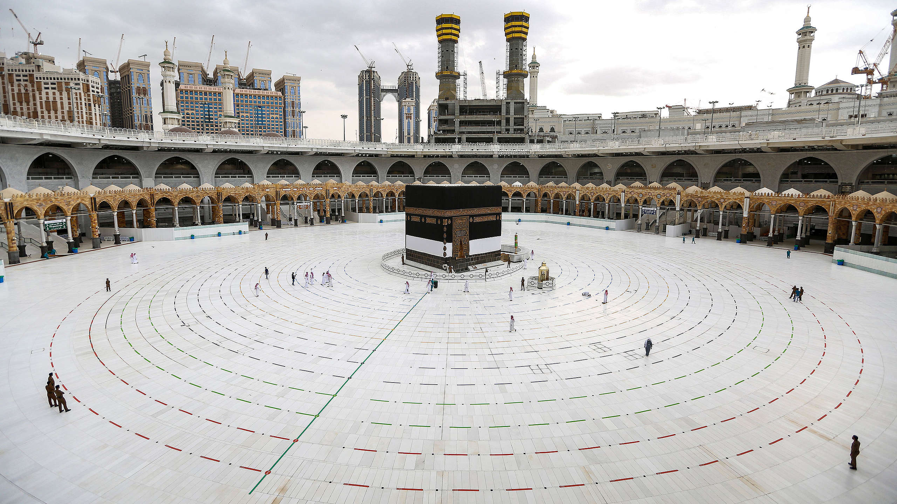
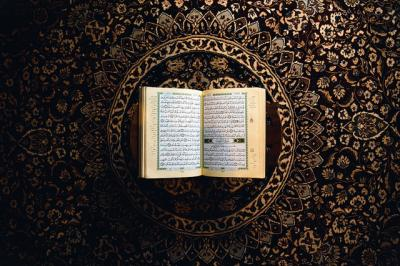
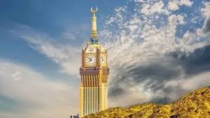

The story about Ibrahim (A) is once In a dream, the Prophet Ibrahim was instructed to sacrifice his son Ismail to Allah. Ibrahim told Ismail about the dream, and both agreed to submit to the will of God. Ismail lay prostrate with his forehead touching the ground, while his father laid a sharp knife upon his neck,Suddenly a goat has come to kill instead of ismail (A). It was a test from allah with a great reward.
The prophet ibrahim (A) is known as the friend of Allah / khalilullah.
PROPHET MUSA (A)
Prophet Musa (A) - is known as the one whom heard the speech of Allah or the one whom Allah spoke to.= Kalimullah.
Prophet Musa (A) is also known for a power of turning a stick into a huge snake when droppped.
PROPHET ISA (A)
Prophet Isa (A) is known as Ruhullah = Spirit of Allah. Not to be taken in a literal sense,he is called this because Allah had the Angel Jibril (A) honor Maryam{peace be upon her} to give birth to Isa (A) without the need for a partner. Angel jibril is who blew the Ruh of Isa (A) into maryam.
PROPHET NUH (A)
The prophet Nuh (A) is known as Najiyullah = The confidant of Allah.